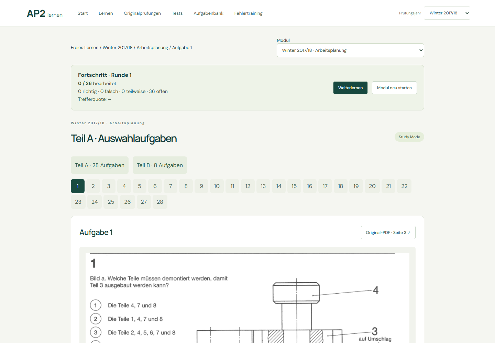
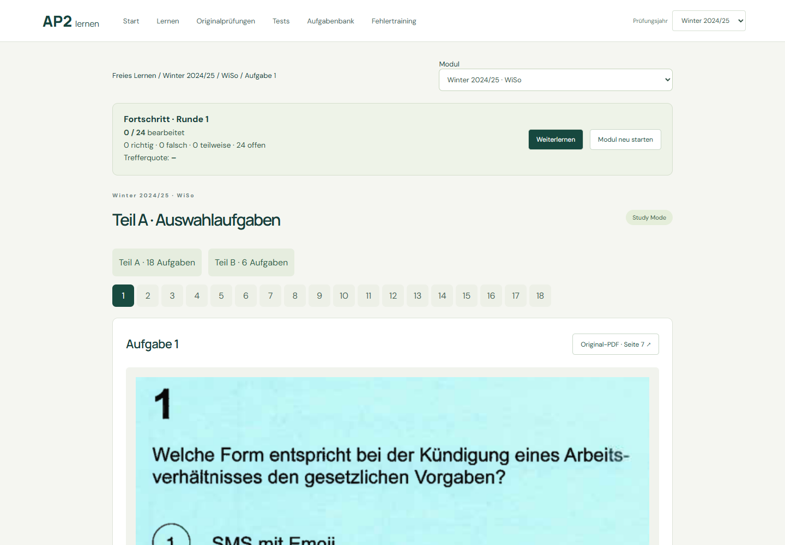
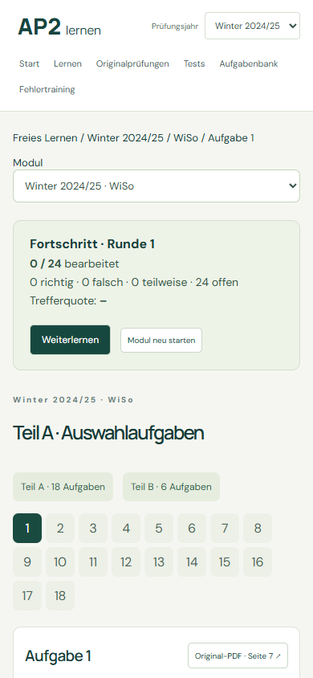

Alle 1.332 veröffentlichten Aufgaben aus 42 Modulen verlinken ihre vollständigen Original-PDFs. 61 eindeutige Quelldokumente sind mit SHA-256 geprüft. Seitenanker öffnen die zugehörige Seite innerhalb des vollständigen Dokuments.
Fragen, offizielle Lösungen und Anlagen bleiben unverändert. Keine PDF-Neuerfassung, kein Rendering, keine Änderung persönlicher Daten. Bildvergrößerungen in technischen Prüfseiten sind ausdrücklich als Bildvorschau bezeichnet.
167 Frontend-Tests und 137 Python-Tests bestanden; drei emulatorgebundene Tests lokal übersprungen. Browserprüfung: alle 61 HTTP-PDF-Dateien, MC/U-Lösungen, Anlagen, Trainingsfortsetzung, alte Prüfungsquellen, Zeitvorgabe und mobile Ansicht.
Browser-Prüfergebnis · Beispiel öffnen


